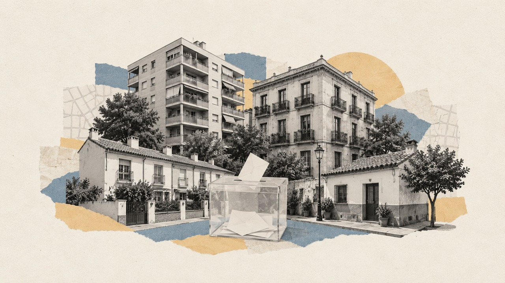

Inicio › Municipios › Gipuzkoa › Donostia/San Sebastián
Barrio de Donostia/San Sebastián · distrito Centro · Generales 2004-2023
Elecciones en Amaraberri
Cómo vota este barrio de Donostia/San Sebastián, quién vive en él y en qué se separa del resto de la ciudad
Por Nacho G. del Álamo · Actualizado el

DatoEn Amaraberri, en el distrito de Centro, el PSOE fue la fuerza más votada en las elecciones generales del 23 de julio de 2023, con el 26,3 % del voto válido, por delante del PNV (22,2 %). Votó el 73,0 % de sus 21.943 electores, 3,0 puntos más que el conjunto de Donostia/San Sebastián (70,0 %): es el 5.º de los 14 barrios de la ciudad con más participación.
¿Y en tu calle? Busca tu dirección y mira qué votó tu sección censal en cada elección desde 2004.
Encuesta del 29N · Gipuzkoa¿Quién ganaría en Gipuzkoa? Mira cómo se reparten sus 6 diputados según la media de encuestas →Amaraberri (Centro) vota en la circunscripción de Gipuzkoa. La media se actualiza con cada encuesta nueva.Dónde votar en Amaraberri (Centro) el 29N
- Tu colegio y tu mesa vienen en la tarjeta censal, que la Oficina del Censo Electoral envía del 2 al 10 de noviembre. Sin esperarla, se consultan en la sede electrónica del INE (con la provincia, el municipio y la primera letra del primer apellido, o con Cl@ve) o en el teléfono gratuito 900 343 232. Con tu sección, mira cómo votó en 2023.
- Horario: el domingo 29 de noviembre, de 9.00 a 20.00.
- Qué llevar: el DNI, el pasaporte o el permiso de conducir, con fotografía y en original. La tarjeta censal no es obligatoria.
- Si no puedes ir: el voto por correo se pide en Correos hasta el 19 de noviembre y se envía hasta el 25; en 2023 lo pidieron 10,3 de cada 100 electores de la provincia de Gipuzkoa (provincia a provincia).
- En Amaraberri (Centro): 21.943 electores en las generales de 2023, en 21 secciones censales.
Fuentes: INE, plazos de interés para los electores; LOREG, artículos 84 y 85; censo de consulta del INE de 2026 y resultados por mesa de Interior de 2023.
Guía completa para votar el 29N · Si te ha tocado mesa · Voto por correo
¿Te ha tocado mesa en Amaraberri (Centro)?
- La notificación llega en los tres días siguientes al sorteo, que los ayuntamientos hicieron entre el 31 de octubre y el 4 de noviembre. Desde que la recibes tienes siete días para alegar una causa justificada ante la Junta Electoral de Zona, y los mayores de 65 pueden renunciar en ese plazo (artículos 26 y 27 de la LOREG).
- Excusas que se aceptan siempre, si se acreditan: tener entre 65 y 70 años, una discapacidad declarada, estar de baja médica, estar embarazada de seis meses o más o de permiso por nacimiento, cuidar de un lactante, de menores de 12 años o de un familiar dependiente, o haber estado en una mesa al menos tres veces en diez años, si la mesa queda cubierta. Otras las valora la Junta caso a caso (Instrucción 6/2011 de la JEC).
- Quién puede tocar: cualquier elector de la mesa que sepa leer y escribir y tenga menos de 70 años. El presidente debe tener el título de Bachiller o de FP de segundo grado o, en su defecto, el de Graduado Escolar o equivalente (artículo 26.2).
- El domingo: a las 8.00 en el colegio, una hora antes de abrir, para constituir la mesa; se vota de 9.00 a 20.00 y después se cuenta (artículos 80 y 84).
- Dieta y permisos: 75 euros para presidentes y vocales (CLM24), permiso retribuido de jornada completa el domingo si para ti es día laborable y, en todo caso, cinco horas menos de trabajo el lunes (artículo 28 de la LOREG).
- Si no vas: es obligatorio salvo excusa aceptada; no presentarse puede castigarse con prisión de tres meses a un año o multa (artículo 143).
- En Amaraberri (Centro): 21.943 electores en las generales de 2023, en 21 secciones censales.
Todo sobre la mesa electoral del 29N: excusas aceptadas, qué se hace en la mesa y cómo se cobra.
DatoDonde más se separa Amaraberri del resto de Donostia/San Sebastián es en el voto de EH Bildu: 17,3 %, frente al 21,8 % de la ciudad, 4,5 puntos menos.
DatoViven en Amaraberri 28.248 personas (Atlas de distribución de renta de los hogares del INE, 2023), con una edad media de 47,2 años (46,7 en Donostia/San Sebastián). El 10,0 % tiene nacionalidad extranjera, frente al 9,3 % de la ciudad. Según el censo de 2021, el 56,5 % de los adultos tiene estudios superiores (50,8 % en la ciudad) y la tasa de paro era del 9,0 % (10,3 %).
DatoLa renta neta media por unidad de consumo es de 31.563 € al año (32.207 € en Donostia/San Sebastián): el 8.º barrio con más renta de los 14 de la ciudad. El 9,5 % de la población vive por debajo del umbral de pobreza relativa (menos del 60 % de la renta mediana).
Ver Amaraberri calle a calle en el mapa de Donostia/San Sebastián
Sección a sección
DatoAmaraberri tiene 21 secciones censales, la unidad más pequeña con resultados electorales (entre 500 y 2.500 electores cada una). En 2023 ganó el PSOE, en 17; el PP, en 3; el PNV, en 1.
PP PSOE PNV
DatoDentro del barrio también hay distancia: en la sección que más votó (distrito 3, sección 16) participó el 77,9 %, y en la que menos (distrito 3, sección 28), el 68,3 %. La primera tiene una renta de 31.145 € por unidad de consumo; la segunda, de 24.563 €.
Las 21 secciones de Amaraberri, una a una
| Sección | Censo | Participación | Más votado | Renta |
|---|---|---|---|---|
| Distrito 3, sección 9 | 823 | 75,0 % | ■ PP (28,5 %) | 32.256 € |
| Distrito 3, sección 10 | 849 | 74,6 % | ■ PP (27,4 %) | 35.399 € |
| Distrito 3, sección 11 | 981 | 70,4 % | ■ PSOE (25,5 %) | 31.932 € |
| Distrito 3, sección 12 | 1.245 | 76,3 % | ■ PP (28,2 %) | 38.634 € |
| Distrito 3, sección 13 | 880 | 68,8 % | ■ PSOE (27,9 %) | 25.263 € |
| Distrito 3, sección 14 | 657 | 72,8 % | ■ PSOE (28,5 %) | 28.611 € |
| Distrito 3, sección 15 | 798 | 72,6 % | ■ PSOE (28,4 %) | 28.667 € |
| Distrito 3, sección 16 | 802 | 77,9 % | ■ PSOE (24,9 %) | 31.145 € |
| Distrito 3, sección 17 | 1.208 | 72,6 % | ■ PSOE (28,3 %) | 28.400 € |
| Distrito 3, sección 18 | 1.178 | 69,3 % | ■ PSOE (28,4 %) | 26.979 € |
| Distrito 3, sección 19 | 1.660 | 75,3 % | ■ PSOE (25,8 %) | 32.945 € |
| Distrito 3, sección 24 | 1.057 | 72,5 % | ■ PNV (25,8 %) | 30.094 € |
| Distrito 3, sección 25 | 1.643 | 74,1 % | ■ PSOE (27,7 %) | 32.549 € |
| Distrito 3, sección 26 | 815 | 72,8 % | ■ PSOE (25,9 %) | 29.310 € |
| Distrito 3, sección 27 | 1.194 | 74,3 % | ■ PSOE (27,2 %) | 30.045 € |
| Distrito 3, sección 28 | 710 | 68,3 % | ■ PSOE (36,2 %) | 24.563 € |
| Distrito 3, sección 29 | 658 | 74,9 % | ■ PSOE (22,6 %) | 30.262 € |
| Distrito 3, sección 30 | 1.104 | 74,1 % | ■ PSOE (26,1 %) | 32.265 € |
| Distrito 3, sección 31 | 1.381 | 72,8 % | ■ PSOE (27,4 %) | 37.262 € |
| Distrito 3, sección 32 | 740 | 72,2 % | ■ PSOE (28,2 %) | 38.992 € |
| Distrito 3, sección 33 | 1.560 | 70,7 % | ■ PSOE (26,1 %) | 31.688 € |
Resultado de las generales de 2023
DatoVoto por partido sobre voto válido (candidaturas más blancos) en las 21 secciones de Amaraberri. La línea discontinua marca el resultado del conjunto de Donostia/San Sebastián.
| Partido | Voto | Votos | Donostia/San Sebastián |
|---|---|---|---|
| PSOE | 26,3 % | 4.198 | 25,0 % |
| PNV | 22,2 % | 3.543 | 21,3 % |
| PP | 17,5 % | 2.787 | 15,3 % |
| EH Bildu / Amaiur | 17,3 % | 2.756 | 21,8 % |
| Sumar / Podemos / IU | 12,4 % | 1.970 | 12,1 % |
| Vox | 2,7 % | 435 | 2,7 % |
| Otros | 1,0 % | 157 | 1,2 % |
| En blanco | 0,6 % | 95 | 0,6 % |
De 2004 a 2023
DatoDesde 2004, el barrio ha cambiado de partido más votado 4 veces: el PSOE ganó en 3, el PNV ganó en 2, el PP ganó en 1, Podemos ganó en 1, Unidos Podemos ganó en 1 de 8 elecciones. La participación ha pasado del 78,0 % en 2004 al 73,0 % en 2023.
| Elección | Participación | Más votado | PP | PSOE | Sumar / Podemos / IU | Ciudadanos | PNV | EH Bildu / Amaiur |
|---|---|---|---|---|---|---|---|---|
| 2004 | 78,0 % | PSOE | 26,4 % | 27,8 % | 6,7 % | — | 23,4 % | — |
| 2008 | 71,2 % | PSOE | 24,6 % | 38,0 % | 4,3 % | 0,1 % | 16,8 % | — |
| 2011 | 73,3 % | PP | 25,0 % | 24,4 % | 3,2 % | — | 21,5 % | 18,2 % |
| 2015 | 75,5 % | Podemos | 16,5 % | 14,6 % | 27,1 % | 6,7 % | 23,5 % | 9,6 % |
| 2016 | 71,7 % | Unidos Podemos | 17,9 % | 16,4 % | 26,0 % | 5,7 % | 23,1 % | 8,5 % |
| abr. 2019 | 77,9 % | PNV | 10,0 % | 22,5 % | 16,5 % | 5,4 % | 29,2 % | 11,3 % |
| nov. 2019 | 72,6 % | PNV | 12,4 % | 21,6 % | 14,6 % | 1,7 % | 31,9 % | 12,7 % |
| 2023 | 73,0 % | PSOE | 17,5 % | 26,3 % | 12,4 % | — | 22,2 % | 17,3 % |
Con las secciones censales de 2023: los resultados de cada elección son los de las secciones que ya existían con el mismo código. Las familias agrupan a cada partido con sus antecesores y coaliciones (Podemos, IU y Sumar; Junts y CiU). «Sumar / Podemos / IU» suma dos listas que se presentaron por separado (en 2015, Podemos y IU-Unidad Popular); el más votado se calcula lista a lista.
Quién vive en el barrio
| Amaraberri | Donostia/San Sebastián | |
|---|---|---|
| Habitantes (2023) | 28.248 | 185.036 |
| Edad media | 47,2 | 46,7 |
| Menores de 18 años | 14,7 % | 14,2 % |
| 65 años o más | 27,8 % | 25,8 % |
| Nacionalidad extranjera | 10,0 % | 9,3 % |
| Nacidos fuera de España (2021) | 14,0 % | 12,2 % |
| Con estudios superiores (2021) | 56,5 % | 50,8 % |
| Tasa de paro (2021) | 9,0 % | 10,3 % |
| Renta neta por unidad de consumo | 31.563 € | 32.207 € |
| Renta neta por habitante | 21.857 € | 22.268 € |
| Bajo el umbral de pobreza relativa | 9,5 % | 9,5 % |
Medias de las secciones del barrio ponderadas por su población. Atlas de Distribución de Renta de los Hogares del INE (2023); estudios, paro y lugar de nacimiento, del censo de población de 2021. La relación entre estas cifras y el voto es entre barrios, no entre personas.
Otros barrios del distrito de Centro
- Erdialdea: el PNV, participación del 73,6 %
- Gune Erromantikoa: el PNV, participación del 75,1 %
- Parte Zaharra: EH Bildu, participación del 69,6 %
- Loiola: el PSOE, participación del 68,1 %
Más datos
- Todos los barrios de Donostia/San Sebastián
- Barrios de las grandes ciudades de España
- Elecciones en Donostia/San Sebastián, desde 1977
- Participación electoral por barrio en toda España
- Voto y renta por barrios en toda España
Preguntas frecuentes
¿Dónde voto en Amaraberri (Centro) el 29N?
En el colegio y la mesa que indica la tarjeta censal, que la Oficina del Censo Electoral envía del 2 al 10 de noviembre (INE). También se puede consultar en la sede electrónica del INE o en el teléfono gratuito 900 343 232.
¿Cuánto se cobra por estar en una mesa electoral en Amaraberri (Centro)?
Lo mismo que en toda España: 75 euros para el presidente y los vocales, cinco más que en 2023, según la Orden INT/650/2026 (CLM24, Última Hora). Además, permiso retribuido de jornada completa el domingo si para ti es día laborable y, en todo caso, cinco horas menos de trabajo el lunes (artículo 28 de la LOREG).
¿Qué excusas valen para no ir a la mesa en Amaraberri (Centro)?
Las mismas en todas partes. Siempre se aceptan, si se acreditan, tener entre 65 y 70 años, una discapacidad declarada, estar de baja médica, estar embarazada de seis meses o más o de permiso por nacimiento, cuidar de un lactante, de menores de 12 años o de un familiar dependiente, o haber estado en una mesa al menos tres veces en los últimos diez años. Otras las valora la Junta Electoral de Zona caso a caso (Instrucción 6/2011 de la Junta Electoral Central). Hay siete días desde la notificación para alegarlas; todo, en la mesa electoral del 29N.
¿Cómo se vota por correo en Amaraberri (Centro) el 29N?
Se pide en cualquier oficina de Correos o en su web hasta el 19 de noviembre; la documentación llega del 9 al 22 y el voto se envía hasta el 25 (INE). En 2023 lo pidieron 10,3 de cada 100 electores de la provincia de Gipuzkoa, según la Oficina del Censo Electoral (el voto por correo, provincia a provincia). Todos los pasos, en el voto por correo del 29N.
Método y fuentes
- Qué es el barrio
- Los límites de barrios y distritos son los de OpenStreetMap (© colaboradores de OpenStreetMap, licencia ODbL), que en la mayoría de ciudades copian la división oficial del ayuntamiento. Cada sección censal del INE se asigna al barrio con el que comparte más superficie; las que caen menos de la mitad dentro de un barrio no se asignan. Como las secciones no siempre siguen los límites de los barrios, alguna manzana del borde puede quedar en el barrio vecino.
- Datos
- Resultados oficiales por mesa del Ministerio del Interior (Infoelectoral) agregados por sección censal, sin el voto de los residentes en el extranjero (CERA). Renta y población: Atlas de Distribución de Renta de los Hogares del INE (2023); estudios, paro y lugar de nacimiento: censo de población de 2021.
- Cómo se calcula
- Porcentajes sobre voto válido (candidaturas más votos en blanco), sumando votos de las secciones, no promediando porcentajes. Participación: votantes entre censo. Agrupación de partidos y límites: metodología del mapa.
- Datos abiertos
- Las cifras salen de las descargas del mapa (CSV, licencia CC BY 4.0); la relación entre secciones y barrios está en data/barrios/secciones_barrio.csv.
- Autoría y revisión
- Nacho G. del Álamo. Publicado el 22 de octubre de 2026; actualizado el 9 de noviembre de 2026. Política editorial · Correcciones